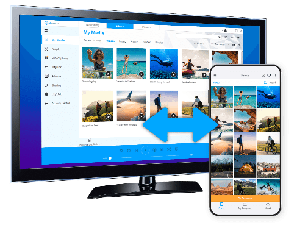

RealPlayer 深度盘点：老牌播放器在 2026 年还剩下哪些真本事
从媒体库管理、多设备协同到加密藏宝箱，RealPlayer 这条活了二十多年的产品线今天还能打哪些硬仗，又在哪些地方明显掉队了。
RealPlayer 这个名字，对很多人来说是 MP3 和 RealMedia 时代的怀旧标签——二十年前你想在线看个视频，RealPlayer 几乎是唯一的选择。今天去realplayer官网转转，你会发现这条产品线远没有死。但那个时代早就过去了，VLC、PotPlayer、MPC-HC 这些开源播放器把本地播放这件事做得既快又免费，RealPlayer 这二十多年来到底在忙什么？
这篇盘点不聊情怀，就看今天下载它到底能用来干嘛。我按真实能力域把它拆开，从媒体库组织、下载抓取、多设备协同、隐私保护这几个维度来系统梳理——它能打硬仗的地方和明显掉队的地方一起说。
媒体库：从播放器变成内容管家
大多数人装 RealPlayer 可能还是冲着播放来的，但打开新版本你第一眼会注意到的不是播放窗口，而是那个叫做 Library 的媒体库面板——RealPlayer 近几年把大量精力砸在了这里，把一个播放器往"个人内容管家"的方向拽。
跨来源组织，按主题消费
默认情况下 Library 会按来源把你所有媒体分组：下载的一组、手动导入的一组、CD 抓轨的一组。但实际消费时你不会想"我要看我下载的那组里的东西"，你会想"我想重温去年冬天的旅行视频合集"或者"把常听的十首歌排队跑完"。
RealPlayer 的解决方案有两个：普通播放列表和 Smart Playlist（智能播放列表）。普通播放列表就是最朴素的拖拽——点住 Library 里的视频直接往列表里拖就行，支持单个拖、多选拖、整个文件夹拖。列表里的条目是引用，删掉列表里的视频不会删原文件，一个视频也可以同时出现在多个列表里。Smart Playlist 更进一步，允许你设条件实时更新：最近 7 天下载的、时长大于 1 小时的、某个人物出现的所有视频——条件一变，列表自动变，条件语法在realplayer文档里也列了常用模板可以直接抄。

人物识别：从内容里识别人脸再打包
这是 RealPlayer 比较少见的、别的播放器基本不做的功能。扫描 Library 时它会自动识别视频里出现的人脸，归成"某个人物的所有视频"卡片，然后一键生成一个专属 Smart Playlist——这个场景想想就实用：你家娃从小到大拍的几十段视频，不用手动一个个挑，RealPlayer 帮你按人自动打包。
下载抓取：浏览器内一键拿视频
如果说媒体库是 RealPlayer 想做成的样子，下载抓取就是它一直在做的招牌。Edge、Chrome、Firefox 装上 RealPlayer 的浏览器扩展后，鼠标悬停在网页视频上会弹出一个 Download This Video 的按钮——扩展本身随安装包一起带，从官方下载拿到最新版就能用，点开就能选清晰度直接抓下来。
这个功能在视频站点上表现不错，尤其是那些不让右键另存、或者有多种清晰度可选的页面。下载完的视频自动进 Library，按你设的 Watch Folder 规则归到对应分类。Premium 版还有批量抓取和自动命名，但说实话，如果你只需要偶尔抓一个视频，免费版已经够用了。
多设备协同：PC 和手机双向跑通
这是 RealPlayer 和它的老对手 VLC、PotPlayer 拉开差距的地方——后两者基本是纯本地播放器，而 RealPlayer 把 PC 和手机之间的同步做了一整套。
PC 上装 RealPlayer，手机上装 RealPlayer Mobile App，用同一个 RealPlayer 账户登录后就能配对。配好之后的场景挺全的：
- PC 主动推给手机：Library 里右键视频 → Send to Mobile，排队传到手机本地存储。付费版可以设置"PC 下载完成自动推手机"，省得你每次手动点。
- 手机回传到 PC：手机上拍的视频，Mobile App 里可以设自动备份——连上 Wi-Fi 且 PC 在线时自动回传到 PC 的 Watch Folder。手动回传也支持，长按视频点 Send to PC 就行。
- RealPlayer Cloud（Premium 专属）：云空间里的视频可以跨设备流式播放，外出没带电脑也能在手机上看自己的媒体库。
同步速度取决于连接方式——同一 Wi-Fi 下最快，走 Cloud 桥接就慢很多。手机空间提醒要留意：推到手机上的视频真的占本地存储，不是流式播放。

Private Mode：把不想被看到的视频锁起来
这是 RealPlayer Plus 以上版本才有的加密空间——把视频移进 Private Mode 后会从 Library 主列表里消失，只有输入你设的 4-8 位 PIN 码才能解锁查看。
加密本身是本地 AES，移进去的文件文件名变成随机哈希值，即使有人翻到 RealPlayer 的内部存储目录也是乱码。解锁期间一切正常：可以投 Chromecast、可以被人物识别、可以加入播放列表；关掉 RealPlayer 或手动锁定后自动恢复隐藏。
但要清楚它的安全等级：这是轻量级加密，防日常误看没问题——防家人、防同事、防朋友随便翻到。防不住专业技术人员（有能力解密本地存储），也防不住病毒（病毒可以在你解锁时读取内容）。真的需要高强度加密还是走 VeraCrypt 或 BitLocker。
还有一个坑必须提前说：PIN 码忘了就是真忘了——没有找回、没有邮箱恢复、没有官方重置入口。设 PIN 之前一定要自己记牢，最稳妥的做法是移进去之前先备份一份。连续输错 5 次会锁定 1 小时，别瞎试。
账户体系：灵活但有点绕
RealPlayer 账户是 RealNetworks 的通用账户，一个账户可以用来登录 RealPlayer 解锁付费版本、登录 YouTube 做深度集成、用 RealPlayer Cloud 云备份、配对 Mobile 设备。账户本身免费注册，但付费授权和订阅是分开的：Express 和 Plus 是买断制，买一次永久拥有；Premium 是订阅制，按月/年自动续费。
一个账户可以在多台电脑上同时登录，Express/Plus 的购买授权通常允许 3-5 台设备。换电脑、重装系统都不需要先登出——RealPlayer 不锁设备。但换电脑后媒体库需要重新扫描：Watch Folder 重新加、Smart Playlist 重新生成、人物识别重新跑。Premium 用户的 Cloud 数据会自动同步到新电脑，这一点省心不少。
短板也要说：它没做到的那些事
盘点下来 RealPlayer 的能力面覆盖得广，但明显有几个短板没法回避：
基础播放能力已不是标杆。今天 VLC、PotPlayer 这些开源播放器在解码速度、画质、CPU 占用上普遍比 RealPlayer 做得好，尤其是 4K HDR、硬解、字幕特效这些细节上——RealPlayer 能播，但不是播得最好的那个。如果你只看本地播放，它没有理由比 VLC 更值得装。
免费版的广告和付费引导比较激进。启动时的弹窗、界面上的 Premium 推送、某些功能按钮点进去直接跳付费升级页，免费版体验说不上舒服。
高级功能的付费门槛高。Private Mode 要 Plus 版、Cloud 要 Premium、自动推手机要 Express+——想把它的特色功能全用上，每年订阅费用不算低。
什么样的人该用它
综合上面这些能力和短板，RealPlayer 适合的人群其实挺明确：
需要"下载 + 组织 + 多设备"一站式的人。如果你不想分别装下载器、播放器、云同步工具，RealPlayer 一个包能把这三件事串起来——浏览器里抓视频、Library 按主题组织、PC 手机双向同步。这个场景下它的一站式体验是 VLC 做不到的。
有"家庭内容归档"需求的人。人物识别 + Smart Playlist + 多设备同步，这组合对家里有娃、拍了一堆视频的家庭特别友好——不用手动整理，RealPlayer 帮你按人自动归档，手机上随时能看。
需要隐私加密但不想折腾专业工具的人。Private Mode 不是军用级加密，但防家人误看完全够用，而且操作简单——拖进去、设 PIN 就完事，比折腾 VeraCrypt 分区省事多了。
反过来说，如果你只需要一个快速本地播放器、或者预算有限只想用免费工具，RealPlayer 基本可以跳过——VLC 够用了。但如果你恰好卡在上面这几个场景里，RealPlayer 这条活了二十多年的产品线，在 2026 年真的还能打。
RealPlayer 这套东西的文档资料在三个仓库都能拿到——GitHub是主源、Gitee和GitCode上也同步了同一份内容，不管你习惯哪边总有一处能访问。